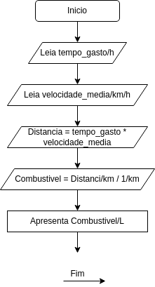

Nome completo: Diego Serafim de Sousa
Nome do/a Professor/a Tutor/a: Said Sadique Adi
Título da atividade: ALGORITMOS E PROGRAMAÇÃO I-T01-2023-2
Vencimento: segunda, 18 set 2023, 23:59
- Entendimento:
Para calcular a quantidade de combustível gasto por um veículo, o tempo gasto e a velocidade média precisamos calcular a distância percorrida pelo veículo. Com a base de um quilômetro por litro determinaremos a quantidade de combustível utilizada.
- Diagramação

- Codificação em Português Estruturado
# Programa calcular_combustivel
var
tempo_gasto, velocidade_media, distancia, combustivel: real
Inicio
leia tempo_gasto
leia velocidade_media
distancia = tempo_gasto * velocidade_media
combustivel = distancia / 1
escreva "A quantidade de combustível gasta é:", combustivel, "litros"
Fim